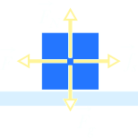
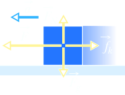
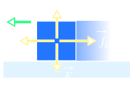
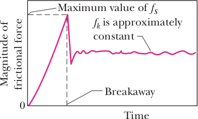

Friction
Friction is a contact force that derives from the microscopic interactions between a body and its environment. Air friction affects vehicles from cars to rockets, and fluid friction the motion of ships or the passage of fluid in pipes. Friction is not always something that impedes motion; however, without friction, we wouldn’t be able to walk or pick up and hold objects.
Friction is also caused when an object is in contact with a surface.
Applichiamo ad un corpo appoggiato su un tabolo orizzontale, una forza F parallela al piano di appoggio. Si osserva sperimentalmente che il corpo non entra in movbimento per effetto di F fino a che il modulo di F non supera il valore μsN, dove μs, è il coefficiente di attrito statico e N, come già indicato nel paragrago 3.4 è il modulo della componente normale al piano di appoggio della reazione vincolare. Abbiamo dunque:
condizione di quite F ≤ μsN
condizione di moto F > μsN
In condizioni di quiete è realizzato l'equilibrio statico
R + F + P = 0
dove R è la reazione vincolare del piano e P la forza peso del corpo. Dette N e Fas le componenti verticale e orizzontale di R, in modulo
N = mg, Fas = F
Il vincolo è in grado di sviluppare una forza, detta di attrito radente statico, eguale e contraria a F. Ciò avviene fino a che F non supera il valore μsN: la forza di attrito radente statico non ha pertanto un valore prefissato, ma varia con il valore della forza F applicata, da zero fino al massimo μsN. Il fenomeno ha origine dalle forze di coesioen tra i materiali a contatto, che sono prem u ti uno co ntro l'altro dalla forza perso del corpo.
Quando F supera μsN il corpo en tra in movimento lungo il piano e sis osserva che si oopone al moto la forza di attrito radente dinamicao Fad = μdN dove μd rappresenta il coefficiente di attrito dinamico; risulta sempre μd < μs. L'equazione dle moto è pertanto
F − μdN = ma
La componente normale della reazione N è sempre data da P in quanto ortogonalmente al piano non c'è moto, non c'è accelerazione e la risultante delle forze è nulla.
La forza di attrito radente dinamico non dipende dalla velocità del corpo rispetto al piano di appoggio ed ha verso contrario alla direzione del moto e quindi alversoe della velocità, uv. Vettorialmente
Fad = μdNud
Abbiamo detto che le forze di attrito radente hanno origine dalle forze di coesione tra due materiali; il valore del coefficiente di attrito dipende dallo stato dellas superficie a contatto e dalla loro composizione chimica. Una eccessiva levigatura fa aumentare la coesione e quindi l'attrito; se le superficie vengonono invece bagnate come si realizza nel caso di organi meccanici in movimento mediante l'utilizzazione di lubrificanti, la foza di attrito diminuisce motevolmente. Un altro metodo per ridurre l'attrito radente consiste nel creare un sottile strato d'aria tra superficie che devono scorrere l'una rispetto all'altra.
Si consideri però che le forze di attrito radente sono sempre presenti, per quanto si possa tentare di ridurle. Quindi se vogliamo realizzare un moto uniforme dobbiamo applicare una forza eguale e contraria alla forza di attrito in modo che la risultante sia nulla. È questa la condizione pratica che deve essere realizzata in ogni moto uniforme al fine di ottenere una situazione di equilibrio dinamico. Soltanto per esaminare casi limite semplificati porremo eguale a zero la forza di attrito; diremo allora che la superficie di scorrimento è liscia. In tutti lgi altri casi si parla di superficie scabra.
In Fig. 1a, a block rests on a tabletop, with the gravitational force Fg balanced by a normal force FN. In Fig. 1b, you exert a force F on the block, attempting to pull it to the left. In response, a frictional force fs is directed to the right, exactly balancing your force. The force fs is called the static frictional force. The block does not move.
| There is no attempt at sliding. Thus, no friction and no motion | a) | Frictional force = 0 |
| Force F attempts sliding but is balanced by the frictional force. No motion | b) | Frictional force = F |
| Force F is now stronger but is still balanced by the frictional force. No motion | c) | Frictional force = F |
| Force F is now even stronger but is still balanced by the frictional force. No motion | d) | Frictional force = F |
| Finally, the applied force has overwhelmed the static frictional force. Block slides and accelerates | e) | Weak kinetic frictional force = F |
| To mantain the speed, weaker force F to match the weak frictional force | f) | Same weak kinetic frictional force = F |
| Static frictinal force can only match growing applied force. | g) | Kinetic frictional force has only one value (no matching) |
Figures 1c and 1d show that as you increase the magnitude of your applied force, the magnitude of the static frictional force fs also increases and the block remains at rest. When the applied force reaches a certain magnitude, however, the block “breaks away” from its intimate contact with the tabletop and accelerates leftward (Fig. 1e). The frictional force that then opposes the motion is called the kinetic frictional force fk.
Usually, the magnitude of the kinetic frictional force, which acts when there is motion, is less than the maximum magnitude of the static frictional force, which acts when there is no motion. Thus, if you wish the block to move across the surface with a constant speed, you must usually decrease the magnitude of the applied force once the block begins to move, as in Fig. 1f. As an example, Fig. 1g shows the results of an experiment in which the force on a block was slowly increased until breakaway occurred. Note the reduced force needed to keep the block moving at constant speed after breakaway.
Microscopic View
A frictional force is, in essence, the vector sum of many forces acting between the surface atoms of one body and those of another body. If two highly polished and carefully cleaned metal surfaces are brought together in a very good vacuum (to keep them clean), they cannot be made to slide over each other. Because the surfaces are so smooth, many atoms of one surface contact many atoms of the other surface, and the surfaces cold-weld together instantly, forming a single piece of metal. If a machinist’s specially polished gage blocks are brought together in air, there is less atom-to-atom contact, but the blocks stick firmly to each other and can be separated only by means of a wrenching motion. Usually, however, this much atom-to-atom contact is not possible. Even a highly polished metal surface is far from being flat on the atomic scale. Moreover, the surfaces of everyday objects have layers of oxides and other contaminants that reduce cold-welding.
When two ordinary surfaces are placed together, only the high points touch each other. (It is like having the Alps of Switzerland turned over and placed down on the Alps of Austria.) The actual microscopic area of contact is much less than the apparent macroscopic contact area, perhaps by a factor of 104. Nonetheless, many contact points do cold-weld together. These welds produce static friction when an applied force attempts to slide the surfaces relative to each other. If the applied force is great enough to pull one surface across the other, there is first a tearing of welds (at breakaway) and then a continuous reforming and tearing of welds as movement occurs and chance contacts are made (Fig. 2).
The kinetic frictional force fk that opposes the motion is the vector sum of the forces at those many chance contacts. If the two surfaces are pressed together harder, many more points cold-weld. Now getting the surfaces to slide relative to each other requires a greater applied force: The static frictional force fs has a greater maximum value. Once the surfaces are sliding, there are many more points of momentary cold-welding, so the kinetic frictional force fk also has a greater magnitude.
Often, the sliding motion of one surface over another is “jerky” because the two surfaces alternately stick together and then slip. Such repetitive stick-and-slip can produce squeaking or squealing, as when tires skid on dry pavement, fingernails scratch along a chalkboard, or a rusty hinge is opened. It can also produce beautiful and captivating sounds, as in music when a bow is drawn properly across a violin string.
Properties of Friction
Experiment shows that when a dry and unlubricated body presses against a surface in the same condition and a force F attempts to slide the body along the surface, the resulting frictional force has the following properties:
Propertis 1. The magnitude of fs has a maximum value fs,max that is given by
fs,max = μsFN
where μs is the coefficient of static friction and FN is the magnitude of the normal force on the body from the surface. If the magnitude of the component of F that is parallel to the surface exceeds fs,max, then the body begins to slide along the surface.
Propertis 2. If the body begins to slide along the surface, the magnitude of the frictional force rapidly decreases to a value fk given by
fk = μkFN 2
where μk is the coefficient of kinetic friction. Thereafter, during the sliding, a kinetic frictional force fk with magnitude given by Eq. 2 opposes the motion.
The magnitude FN of the normal force appears in properties 1 and 2 as a measure of how firmly the body presses against the surface. If the body presses harder, then, by Newton’s third law, FN is greater. Properties 1 and 2 are worded in terms of a single applied force F, but they also hold for the net force of several applied forces acting on the body. Equations 6-1 and 6-2 are not vector equations; the direction of fs or fk is always parallel to the surface and opposed to the attempted sliding, and the normal force FN is perpendicular to the surface.
The coefficients μs and μk are dimensionless and must be determined experimentally. Their values depend on certain properties of both the body and the surface; hence, they are usually referred to with the preposition “between,” as in “the value of μs between an egg and a Teflon-coated skillet is 0.04, but that between rock-climbing shoes and rock is as much as 1.2.” We assume that the value of μk does not depend on the speed at which the body slides along the surface.